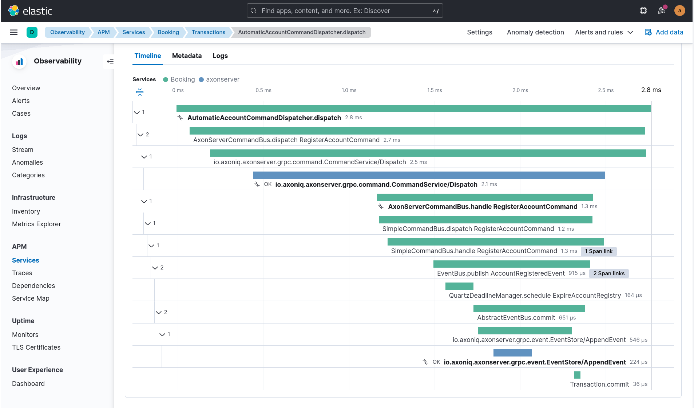

Distributed Tracing
|
Distributed Tracing not available in Axon Framework 5.0
The Distributed Tracing feature is not yet available in Axon Framework 5.0. It will be reintroduced in Axon Framework soon. The documentation below describes the Distributed Tracing concepts for reference and future use. |
Distributed Tracing enables you to track the path of a message through your system to see how the system behaves and performs. Axon Framework provides additional tracing functionality to track what takes time in your microservice, such as how long it took to load the aggregate, how long the actual command invocation took, or how long it took to publish events.
Span factories
To provide additional insights in traces, many Axon Framework components use a SpanFactory.
This factory is responsible for the creation of multiple instances of a Span with a specific purpose.
You can use a SpanFactory provided the framework that matches your tracing standard.
Or, if your tracing standard of choice is not supported, you can create one yourself by implementing the SpanFactory and Span interfaces.
The following standards are currently supported:
| Tracing standard | Supported | Description |
|---|---|---|
OpenTelemetry |
Yes |
OpenTelemetry is the successor of OpenTracing, with auto-instrumentation being its most prominent feature. |
OpenTracing |
Limited |
OpenTracing is supported by an extension with limited functionality. Usage of OpenTelemetry is recommended instead. |
SLF4j |
Yes |
If you have no monitoring system in place but want to trace through logging, the framework provides a |
You configure a SpanFactory in the following ways:
Axon Configuration API
public class AxonConfig {
// omitting other configuration methods...
public void configure(Configurer configurer) {
configurer.configureSpanFactory(configuration -> new MyCustomSpanFactory());
}
}Spring Boot auto configuration
@Configuration
public class AxonConfig {
// omitting other configuration methods...
@Bean
public SpanFactory spanFactory() {
// Any bean implementing the SpanFactory will be picked up automatically and override the defaults
return new MyCustomSpanFactory();
}
}Note that this is not necessary for all providers, since some may provide Spring Boot auto-configuration out of the box. To configure the provider of your choice, please refer to the specific subsection on this page.
Terminology
A trace is a collection of one or more spans that together form a complete journey through your software. Creating a span that is not part of a trace will automatically create one with that span being the root span of the trace.
Tools such as ElasticSearch APM can render tracing information, as visible in the following image:

What we observe here is that a command is dispatched, distributed by Axon Server and handled.
As a result of the command an AccountRegisteredEvent is published and a deadline is scheduled as well.
In this image, the AutomaticAccountCommandDispatcher.dispatch span is the root trace, with each span being part of a call hierarchy within that trace.
Combining factories
Sometimes you want the functionality of multiple SpanFactory implementations, while Axon’s configuration only allows one.
For this purpose, the framework contains the MultiSpanFactory that you can configure with multiple factories to which it delegates its calls.
For example, you can configure both the LoggingSpanFactory and the OpenTelemetrySpanFactory in the following fashion:
Axon Configuration API
public class AxonConfig {
// omitting other configuration methods...
public void configure(Configurer configurer) {
configurer.configureSpanFactory(configuration -> new MultiSpanFactory(
Arrays.asList(
LoggingSpanFactory.INSTANCE,
OpenTelemetrySpanFactory.builder().build()
)
));
}
}Spring Boot auto configuration
@Configuration
public class AxonConfig {
// omitting other configuration methods...
@Bean
public SpanFactory spanFactory() {
return new MultiSpanFactory(
Arrays.asList(
LoggingSpanFactory.INSTANCE,
OpenTelemetrySpanFactory
.builder()
.build()
)
);
}
}By configuring the MultiSpanFactory a single, delegating span is created whenever the framework requests it.
This span contains the multiple span, one of each configured factory.
The deleting span makes sure all spans are called, acting as a single one.
Features
The following functionality in Axon Framework is traced in addition to the tracing capabilities already provided by the standard of your choice:
Tracing all of this functionality provides you with the best possible insight into the performance of your application.
Span types
The configured SpanFactory is responsible for creating spans when the framework requests it.
The framework specifies the type of span, the name, and a message that triggered the span (if any, it’s not required).
The framework can request the span types defined in the following table:
| Span Type | Description |
|---|---|
Root trace |
Create a new trace entirely, having no parent. |
Dispatch span |
A span which is dispatching a message. |
Handler span |
A span which is handling a message. Will set the span that dispatched the message as the parent. |
Internal span |
A span which specified something internal. It’s not an entry or exit point. |
A trace generally consists of multiple spans with different types, depending on the functionality.
Span nesting
Starting a span will make it a child span of the currently active one. If there’s currently no span active, the new span will become the root span of a new trace.
During invocations which are normally synchronous, Axon Framework will create normal spans which become a child of the currently active one. For example, publishing an event from a command is synchronous, and therefore the publishing span becomes a child of the command handling span.
When it comes to asynchronous invocations, the framework forces a new root trace to be created. For example, a streaming event processor that processes an event will not be a child of the command handling span. Instead, it will become its own root trace. This is a measure to prevent traces from becoming too time-spread, making them unreadable.
Some standards, like OpenTelemetry, support linking. By linking one span to another, they become correlated despite being part of a different trace. Tooling that supports this creates links for the user to click, allowing for easy navigation between related traces. This is incredibly useful to see causation within your system.
Span attribute providers
Most tracing implementations can add additional attributes to spans.
This is useful when debugging your application or finding a specific span you are looking for.
The framework provides the SpanAttributesProvider, which can be registered to the SpanFactory either via its builder (if supported) or by calling the SpanFactory.registerSpanAttributeProvider(provider) method.
The following SpanAttributesProvider implementations are included in Axon Framework:
| Class | label | description |
|---|---|---|
|
|
The aggregate identifier of the message, only present in case of a |
|
|
The identifier of the message |
|
|
The name of the message for Commands and Queries |
|
|
The class of the message, such as |
|
|
The class of the payload in the message |
|
|
All metadata of the message is also added to the span with its corresponding key |
In addition to the ones provided by the framework, you can also create a custom SpanAttributesProvider.
and add it to the SpanFactory.
Use this if you want to add custom information on spans as a label.
public class CustomSpanAttributesProvider implements SpanAttributesProvider {
@Nonnull
@Override
public Map<String, String> provideForMessage(@Nonnull Message<?> message) {
// Provide your labels based on the message here
return Collections.emptyMap();
}
}You can register this custom SpanAttributesProvider in one of the following ways.
Axon Configuration API
public class AxonConfig {
// omitting other configuration methods...
public void configure(Configuration configuration) {
configuration.spanFactory().registerSpanAttributeProvider(new CustomSpanAttributesProvider());
}
}Spring Boot auto configuration - bean creation
@Configuration
public class AxonConfig {
// omitting other configuration methods...
@Bean
public SpanAttributesProvider customSpanAttributesProvider() {
// Auto-configuration picks beans of type SpanAttributesProvider up automatically.
return new CustomSpanAttributesProvider();
}
}OpenTelemetry
Axon Framework provides OpenTelemetry support out of the box. The OpenTelemetry standard improves upon the OpenTracing and OpenCensus standards by providing more auto-instrumentation without the need for the user to configure many things.
OpenTelemetry works by adding a Java agent to the execution of the application. Based on the configuration, the agent will collect logs, metrics, and tracing automatically before sending it to a collector that can provide insights. ElasticSearch APM, Jaeger, and many other tools are available for collecting and visualizing the information. The configuration of these tools is beyond the scope of this guide. You can find more information in the "Getting Started" section of the OpenTelemetry documentation.
OpenTelemetry "supports a lot of libraries,
frameworks and application servers out of the box."
For example, when a Spring REST endpoint is called it will automatically start a trace.
With the axon-tracing-opentelemetry module, this trace will be propagated to all subsequent Axon Framework messages.
For example, if the REST call produces a command which is sent over Axon Server, handling the command will be included in the same trace as the original REST call.
Configuration
To get OpenTelemetry support enabled you will need to add the following dependency to your application’s dependencies:
Maven
<dependency>
<groupId>org.axonframework</groupId>
<artifactId>axon-tracing-opentelemetry</artifactId>
<version>${axon-framework.version}</version>
</dependency>Gradle
implementation group: 'org.axonframework', name: 'axon-tracing-opentelemetry', version: axonFrameworkVersionDepending on your application, more configuration might be needed.
Spring Boot auto configuration
When using the Spring Boot auto-configuration of Axon Framework, most things will be autoconfigured regardless of the implementation.
You might want to configure certain settings that are available. The following table contains all configurable settings, their defaults, and what they change:
| setting | Default | Description |
|---|---|---|
|
|
Whether to show event sourcing handlers as a trace. This can be noisy and is disabled by default. |
|
|
Whether to add the aggregate identifier as a label when handling a message |
|
|
Whether to add the message identifier as a label when handling a message |
|
|
Whether to add the message name as a label when handling a message |
|
|
Whether to add the message type as a label when handling a message |
|
|
Whether to add the payload type as a label when handling a message |
|
|
Whether to add the metadata properties as labels when handling a message |
Manual configuration
The OpenTelemetry support can also be configured using the Configurer of Axon Framework to configure the OpenTelemetrySpanFactory.
public class AxonConfig {
// omitting other configuration methods...
public void configure(Configurer configurer) {
configurer.defaultConfiguration()
.configureSpanFactory(c -> OpenTelemetrySpanFactory.builder().build());
}
}Note that when not using Spring boot, tracing each message handler invocation is not supported due to a limitation.
OpenTracing
The OpenTracing standard is deprecated. If necessary, you can still use the OpenTracing extension of Axon Framework.
Note that the functionality of this extension is rather limited compared to the OpenTelemetry integration. Because of this, it’s recommended to switch to OpenTelemetry if possible.
Logging
Sometimes you don’t have an APM system available, for instance, during local development.
It might still be useful to see the traces that would be started and finished to obtain insights.
For this purpose, the framework provides a LoggingSpanFactory.
You can configure the LoggingSpanFactory in the following ways:
Traced components
Axon Framework provides a large range of components that are traced by the configured SpanFactory.
The spans created by each component are available for reference in this section, with additional information about how they should be interpreted.
It’s important to note that the availability of these spans is highly dependent on the application configuration.
For instance, some components are only used when using Axon Server, or you might have created your own CommandBus
implementation which does not call the SpanFactory API.
Commands
The CommandBus is instrumented to create spans for both dispatching and handling commands.
The tracing differs based on whether you are using Axon Server.
The following tabs show the possible traces.
Axon Server
When using the AxonServerCommandBus, there will be two handling and dispatch traces since it uses a second CommandBus to invoke the command locally after receiving it from Axon Server.
In addition, you can see the gRPC-call to Axon Server and the time it took to handle the call.
| Trace name | Description |
|---|---|
|
The bus is dispatching the command to Axon Server. |
|
The bus has received a command and is handling it. |
|
The localSegment invocation, dispatching the command locally. |
|
The localSegment is handling the command. |
|
The aggregate is being loaded by the repository. During this time Axon Framework will obtain a lock, fetch snapshots and events from the event store to hydrate the aggregate. |
|
The repository is obtaining a lock for the aggregate. This taking some time indicates that the command was queued due to another command being handled for the same aggregate. |
Without Axon Server
| Trace name | Description |
|---|---|
|
The bus is dispatching the command locally. |
|
The bus is invoking the handler locally. |
|
The aggregate is being loaded by the repository. During this time Axon Framework will obtain a lock, fetch snapshots and events from the event store to hydrate the aggregate. |
|
The repository is obtaining a lock for the aggregate. This taking some time indicates that the command was queued due to another command being handled for the same aggregate. |
During handling of commands, other functionality might be invoked such as scheduling deadlines or publishing events. Please refer to the specific sections of this functionality for more information.
Events
When publishing events, spans are created to indicate the event being published. Each event that is being published has its own specific publishing span. Any streaming event processor or saga handling the event in the future will be linked to the publishing spans, allowing easy click-through.
| Trace name | Description |
|---|---|
|
For each event, a short span is created to indicate that an event was published. |
|
Indicates events being committed to the event store. |
Event processors
Event processor invocations are traced as well. Since Streaming Event Processors are asynchronous, a new root trace is created for each event. Subscribing event processors, on the other hand, will become part of the current trace because they are invoked synchronously.
Streaming event processors
| Trace name | Description |
|---|---|
|
Root trace of handling the event, includes all interceptor invocations. |
|
Inner span of handling the event, after all interceptors have been invoked. |
Deadlines
Any action related to deadlines is traced in order to gain insight into what happened during specific calls. Mutations on deadlines generally happen from another root trace, such as a command or saga. The handling span of a deadline will be linked to the scheduling span for easy navigation.
| Trace name | Description |
|---|---|
|
A deadline was scheduled. |
|
A deadline was cancelled based on name and |
|
All deadlines with a specific name were cancelled. |
|
All deadlines within a specific scope with a specific name were cancelled. |
|
Root trace of a deadline firing, containing the name and payload class. |
Snapshotting
Snapshotting is done in a separate root trace, due to the fact that it’s an asynchronous action and has no user impact.
However, it can still be useful to measure the performance of snapshotting and see when it is triggered.
The root trace of the Snapshotter invocation will be linked to the command handling span after which the snapshot was scheduled to be created.
| Trace name | Description |
|---|---|
|
A snapshot creation task is being submitted. Depending on performance, the executor might take a while to pick it up. |
|
The |
The root trace does not contain the aggregate identifier so the APM tool groups any Snapshotter calls of the same aggregate type together.
Sagas
Sagas are a special type of event processor that can invoke multiple saga’s for a single event.
Because of this the AbstractSagaManager has been instructed with additional tracing information.
These spans are descendants of an event processor span that invokes the manager.
| Trace name | Description |
|---|---|
|
A matching saga has been found and is being invoked. |
|
The manager is constructing a new saga. |
Queries
Queries support tracing in all of their forms. In order to be clear about how they work, this section is split based upon the query’s type. For all types, the created spans will differ based on whether Axon Server is used or not. The spans that are only available with Axon Server are marked as such.
Direct queries
Direct queries fetch a single result (either a single item or a single list) and receive no updates. Traces will differ based on whether Axon Server is used or not. The following tabs show the possible traces.
Axon Server
| Trace name | Description |
|---|---|
|
The requesting service is dispatching the query. |
|
The handling service is handling the query request in a task. |
|
The handling service is handling the query. |
|
The requesting service is processing the response. |
Streaming queries
Streaming queries look similar to the traces of a Direct query.
They do not contain a ResponseProcessingTask span since their results are directly published to the invoker of the query.
Traces will differ based on whether Axon Server is used or not.
The following tabs show the possible traces.
Axon Server
| Trace name | Description |
|---|---|
|
The requesting service is dispatching the query. |
|
The handling service is handling the query request in a task. |
|
The handling service is handling the streaming query. |
Scatter-gather queries
Scatter-Gather queries are like a direct query but can fetch results from multiple services at the same time. Part of the trace can thus be duplicated multiple times, since multiple services are invoked. Traces will differ based on whether Axon Server is used or not. The following tabs show the possible traces.
Axon Server
| Trace name | Description |
|---|---|
|
The requesting service is dispatching the query. |
|
The handling service is handling the query request in a task. |
|
Each handling service is handling the query. Each handler within the same service has its own index. |
Subscription queries
Subscription queries are traces in a different way than others. Subscription queries have an initial result, which is traces like a direct query. However, new results can later be published at any time after while the caller is still subscribed to it.
In order to prevent malformed traces, since most APM tools have a maximum span time before flushing them, publication of new results is not part of the original trace.
However, invocations of the SimpleQueryUpdateEmitter will be linked to the span of the queries that are listening to it, so the original call can easily be found.
The QueryUpdateEmitter traces will look like the following table:
| Trace name | Description |
|---|---|
|
A new update is emitted. |
|
A new update is emitted for a specific consumer. |
In addition to this, the spans of the direct queries section apply as well.
Message handler invocations
The TracingHandlerEnhancerDefinition automatically creates a span for each message handler invocation within your application.
This is true for commands, events, queries, and even custom message handlers.
Spans will be created with the following format:
ContainingClassName.methodName(ArgumentClass1, Argumentclass2, etc).
Examples of this are:
-
RoomAvailabilityHandler.on(RoomAddedEvent)
-
Account(RegisterAccountCommand,DeadlineManager)
The TracingHandlerEnhancerDefinition functionality is autoconfigured for Spring Boot, with event sourcing handlers turned off by default.
This is because loading an aggregate might invoke many of these handlers, hitting the maximum number of spans for your APM tool.
Please refer to the Spring Boot configuration section if you want to enable this.